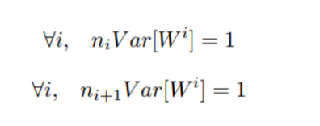

资料整理
机器学习相关资料整理
Analytical and Numerical 的区别 ？
- Analytical通过数学方式分析求解；
- Numerical 通过迭代输入， 不断逼近理论值；

f(x,y)=max(x,y) 函数 如何求导 ?
f(x,y)=max(x,y)
∂f/∂x=1, ∂f/∂y=0 (x>=y)
∂f/∂y=1，∂f/∂x=0 (y>=x)
也就是说，在两个数当中，对于大的那个数来说，导数为1，对于比较小的数字，导数为0. 直观上的理解，我们取x=4，y=2，所以最大值是4，在一定范围内，不管y怎么改变，我们的函数值都不会改变。 如果我们增加一点点x的值 ，我们增加h好了，然后函数值也会增加h，所以导数是1，对于y来说，我们增加一点点，函数值依旧是4
softmax 公式

常见activation function

应用场景
- 在隐藏层中，可以用 relu, tanh, softplus 等非线性的激活函数。
- 在分类问题中，可以用 sigmoid ，softmax 来求概率。例如选择 N 类中概率最大的那一类作为预测值。
- 在回归问题中，可以什么激活函数都不用，只用 linear function，或者对于价格、高度这种非负的变量，可以在输出层用 relu这种非负的激活函数，使输出值非负。
Xavier Initialization
为了保证前向传播和反向传播时每一层的方差一致，应满足:

实际输入与输出个数往往不相等，为均衡考量，最终权重方差应满足：

因此，Xavier初始化的实现就是下面的均匀分布：

VGG-Net Introduce
Q-learning

github demo参考： q-learning-simple-game